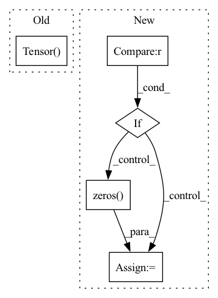

Pattern ID :22417

Before Change
head, relation, tail = positive_sample
subsampling_weight = self.count[(
head, relation)] + self.count[(tail, -relation-1)]
subsampling_weight = torch.sqrt(1 / torch.Tensor([subsampling_weight]))
positive_sample = torch.LongTensor(positive_sample)
return positive_sample, subsampling_weight, self.mode
After Change
return self.len
def __getitem__(self, idx):
if self.mode == "classification" and self.pre_compute:
return self.triples[idx], self.targets[idx], self.mode
elif self.pre_compute:
return self.triples[idx], self.weights[idx], self.mode
elif self.mode == "classification" and not self.pre_compute:
target = torch.zeros(self.n_entity)
for t in self.targets[idx]:
target[t] = 1
return self.triples[idx], target, self.mode
In pattern: SUPERPATTERN
Frequency: 3
Non-data size: 5
Instances
Fragment ID: 70924202
Project Name: raphaelsty/mkb
Commit Name: 9ffad2c9934ed44284b29df072351a519ae9d2a3
Time: 2020-09-17
Author: raphael.sourty@gmail.com
File Name: kdmkb/datasets/base.py
M Class Name: TrainDataset
N Class Name: TrainDataset
M Method Name: __getitem__(2)
N Method Name: __getitem__(2)
M Parent Class: Dataset
N Parent Class: Dataset
M File Name: kdmkb/datasets/base.py
N File Name: kdmkb/datasets/base.py
M Start Line: 50
M End Line: 56
N Start Line: 69
N End Line: 87
'>
Before Change
cate_label[top:(down+1), left:(right+1)] = gt_label
seg_mask = mmcv.imrescale(seg_mask, scale=1. / output_stride)
seg_mask = torch.Tensor(seg_mask)
for i in range(top, down+1):
for j in range(left, right+1):
label = int(i * num_grid + j)
After Change
ins_label.append(cur_ins_label)
ins_ind_label[label] = True
grid_order.append(label)
if len(ins_label) == 0:
ins_label = torch.zeros([0, mask_feat_size[0], mask_feat_size[1]], dtype=torch.uint8, device=device)
else:
ins_label = torch.stack(ins_label, 0)
ins_label_list.append(ins_label)
cate_label_list.append(cate_label)
'>
Fragment ID: 70924206
Project Name: wxinlong/solo
Commit Name: 5c6ad798d95005085302f382da8530a221ac3dba
Time: 2020-12-03
Author: wangxinlon@gmail.com
File Name: mmdet/models/anchor_heads/solov2_light_head.py
M Class Name: SOLOv2LightHead
N Class Name: SOLOv2LightHead
M Method Name: solov2_target_single(5)
N Method Name: solov2_target_single(5)
M Parent Class: nn.Module
N Parent Class: nn.Module
M File Name: mmdet/models/anchor_heads/solov2_light_head.py
N File Name: mmdet/models/anchor_heads/solov2_light_head.py
M Start Line: 303
M End Line: 336
N Start Line: 293
N End Line: 352
'>
Before Change
cate_label[top:(down+1), left:(right+1)] = gt_label
seg_mask = mmcv.imrescale(seg_mask, scale=1. / output_stride)
seg_mask = torch.Tensor(seg_mask)
for i in range(top, down+1):
for j in range(left, right+1):
label = int(i * num_grid + j)
After Change
ins_label.append(cur_ins_label)
ins_ind_label[label] = True
grid_order.append(label)
if len(ins_label) == 0:
ins_label = torch.zeros([0, mask_feat_size[0], mask_feat_size[1]], dtype=torch.uint8, device=device)
else:
ins_label = torch.stack(ins_label, 0)
ins_label_list.append(ins_label)
cate_label_list.append(cate_label)
'>
Fragment ID: 70924208
Project Name: wxinlong/solo
Commit Name: 5c6ad798d95005085302f382da8530a221ac3dba
Time: 2020-12-03
Author: wangxinlon@gmail.com
File Name: mmdet/models/anchor_heads/solov2_head.py
M Class Name: SOLOv2Head
N Class Name: SOLOv2Head
M Method Name: solov2_target_single(5)
N Method Name: solov2_target_single(5)
M Parent Class: nn.Module
N Parent Class: nn.Module
M File Name: mmdet/models/anchor_heads/solov2_head.py
N File Name: mmdet/models/anchor_heads/solov2_head.py
M Start Line: 303
M End Line: 336
N Start Line: 293
N End Line: 353